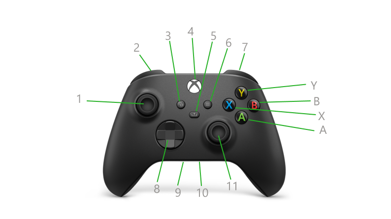
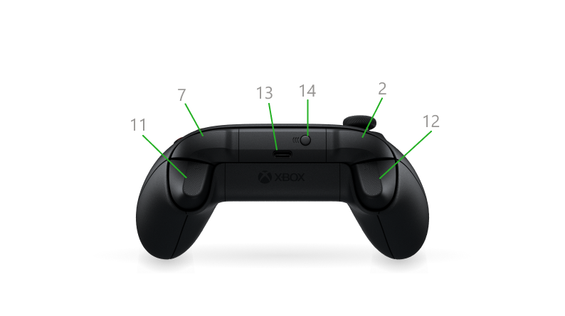

Get to know your Xbox Accessories
Xbox controllers
For Xbox Series X|S, we’ve streamlined the Xbox Wireless Controller for comfort, performance, and instant sharing.
The controller also works great with Xbox One, Windows 10/11, and cloud gaming devices.
The face of the controller

|
X X button Y Y button A A button B B button |
Left stick (1) and right stick (11): These are small joysticks, raised above the controller surface. The left stick resides on the upper left of the front face of the controller, and the right stick resides on the lower right of the front face. The sticks are used to interact with games, apps, and the Xbox console. These move directionally and they can also function as clickable buttons when you press down on them.
Left bumper (2) and right bumper (7): These oblong-shaped controls reside on the top of the controller to the left and right of the USB-C charging port. They are used to interact with games, apps, and the Xbox console. They are often used to let you jump between sections of the interface but have varied functionality depending on the game.
View button (3): This button resides just to the lower left of the Xbox button. The functions of this button vary depending on the app or game
Xbox button (4): This button resides at the top on the face of the controller. It has multiple functions:
- When the controller is turned off, pressing this button turns on the controller. It will also turn on the console if the console is not already on.
- When the controller is turned on:
- Pressing this button once will open the guide on the Xbox console. On a Windows 10/11 device during game play, this button will open Xbox Game Bar. Exceptions: The Xbox button won’t open Game Bar during cloud gaming or when game streaming to the Xbox Console Companion app.
- Pressing and holding this button will open the What do you want to do? screen. From there, you can turn off the console or controller, restart the console, or turn on Narrator or Magnifier.
- Pressing and holding this button for about 6 seconds turns off the controller.
The back of the controller
| 2 Left bumper | 12 Left tigger |
| 7 Right bumper | 13 USB-C power port |
| 11 Right trigger | 14 Pair button |
Left bumper (2) and right bumper (7): These oblong-shaped controls reside on the top of the controller to the left and right of the USB charging port. These controls are used to interact with games, apps, and the Xbox console. They are often used to let you jump between sections of the interface but have varied functionality depending on the game.
Right trigger (11) and left trigger (12): Positioned just below the bumpers on the front-top edge of the controller. These are pressable controls are most commonly used during gameplay. They often vibrate to provide feedback during the games, though you can turn off vibration in the controller settings.
USB-C power port (13): The USB-C power port is used for charging your Xbox Series X|S Wireless Controller. This port resides on the top edge of the controller above the Xbox button
Xbox headsets
The Xbox Stereo Headset provides high-quality audio and chat with a 3.5mm wired connection to the Xbox Wireless Controller (compatible with Xbox Series X|S and Xbox One consoles, as well as Windows 10 devices).
Connecting to Xbox console and other devices
To connect the Xbox Stereo Headset with an Xbox Series X|S or Xbox One console, plug the headset directly into the 3.5mm port on the front of any Xbox Wireless Controller that is paired with the console. The headset can also be plugged into the port on an Xbox One Stereo Headset Adapter that is connected to the controller.
The headset can also be plugged directly into any device with a 3.5mm audio port (bypassing the controller).
Using the headset
Volume: To adjust the headset volume, turn the dial on the outside of the right earcup. Rotating forward/clockwise will increase the volume; rotating backward/counterclockwise will decrease the volume.
Mute: The headset’s mute switch is located on the back end of the mic attachment (on the bottom of the left earcup). Slide the switch forward (towards the mic) to unmute; slide the switch back (away from the mic) to mute.
More Xbox accessories support
Xbox Rechargeable Battery
Insert the battery pack
- Open the controller’s battery compartment door.
- Insert the rechargeable battery pack with the connection side first, aligned with the connection points in the compartment. The battery is designed to be inserted only in this direction.
- Replace the battery compartment door.